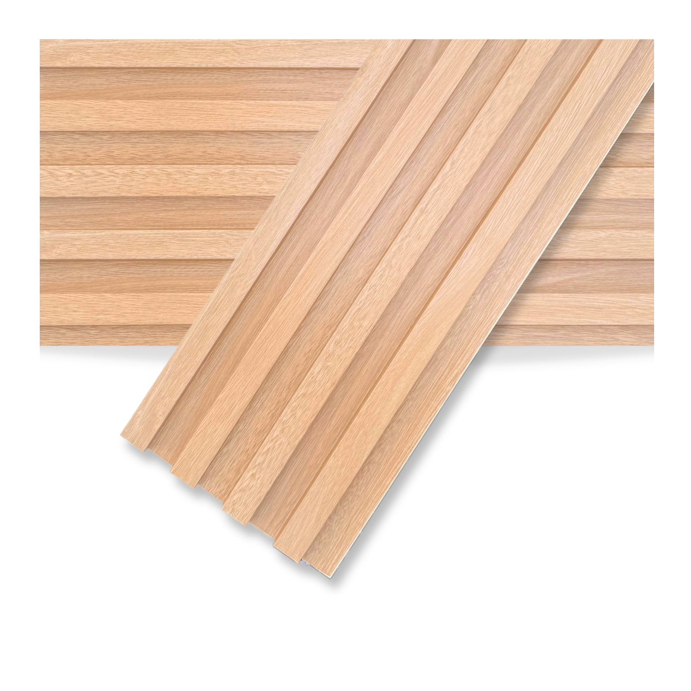

DECK-WPC Interior y exterior
Instalaciones "QWERTY" nos especializamos en el suministro e instalación profesional de revestimientos y decks de WPC (Madera Plástica). Combinamos la calidez y la estética natural de la madera con la resistencia del plástico, ofreciendo soluciones modernas, de bajo mantenimiento y alta durabilidad para interiores y exteriores..
Wall Panel Interior
El WPC Wall Panel para interiores es un revestimiento decorativo compuesto por WPC (Wood Plastic Composite o compuesto de madera y plástico), un material híbrido que combina fibras de madera natural con polímeros reciclados o de alta densidad. Este acabado —muy popular por sus diseños varillados o acanalados— ofrece la calidez estética y la textura visual de la madera fina, pero sumando la durabilidad, resistencia a la humedad e impermeabilidad del plástico. Al no requerir mantenimiento, barnices ni lijados, es ideal para transformar paredes, cabeceros de cama o sectores destacados en livings, dormitorios y oficinas, brindando un estilo moderno, elegante y de fácil instalación (directamente sobre la pared o construcciones en seco) sin necesidad de hacer obras complejas.
Wall panel Exterior
Wall Panel WPC para Exterior: Elegancia, Resistencia y Cero Mantenimiento El Wall Panel WPC (Wood Plastic Composite) para exterior es un revestimiento tecnológico diseñado para transformar fachadas, galerías, balcones y muros. Compuesto por una combinación de fibras de madera reciclada y polímeros de alta densidad, ofrece la calidez estética de la madera natural sin sus desventajas de deterioro frente al clima.
Mis Proyectos
me gusta la programacion con coderhouse es increible su manera de enseñar.
